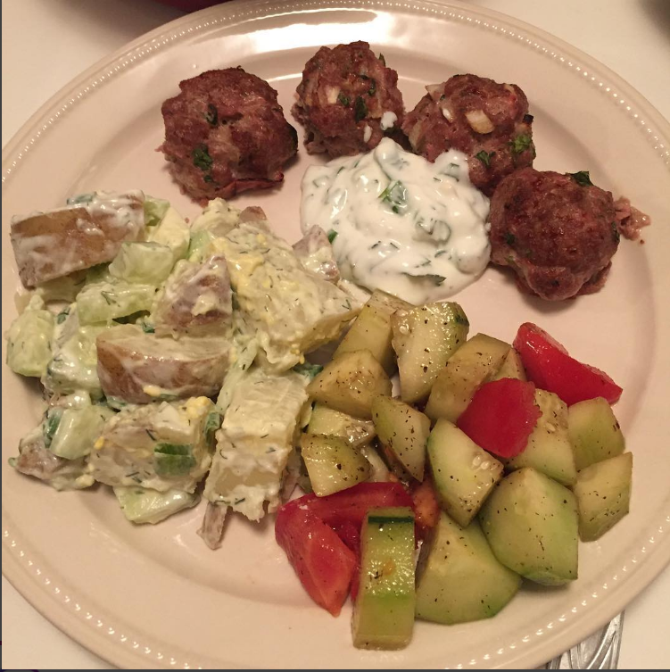
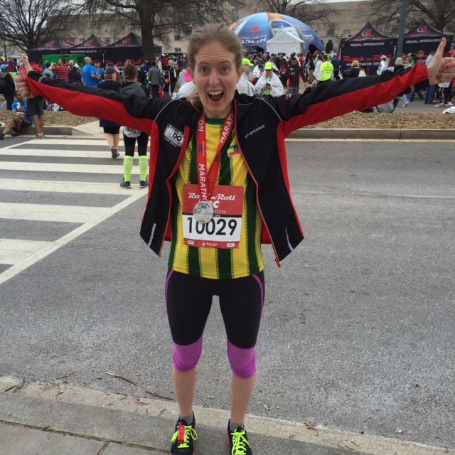
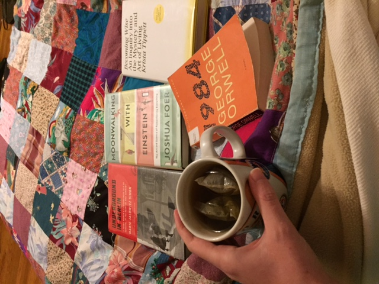

Meet Hannah
A long distance runner, polyglot in progress, adventurous home cook.
Belorussian Potato Salad
The humble potato occupies a special place in Belarusian cooking and culture - featuring in numerous dishes, and even in the well-known traditional folk song and dance “Bulba” (Potato).Perhaps ironically, one of the dishes I most fondly remember from my three visits to Belarus features the potato in a supporting, rather than a starring, role. During the month that I spent in her home in the summer of 2009, my Belarusian host mother, Luidmila Sobol, frequently prepared kholodnik, a cold soup whose broth is created by boiling sorrel leaves. Hard-boiled eggs, fresh cucumbers, dill, and scallions are chopped, mixed with salt, topped with a generous dollop of sour cream, and then the sorrel leaves and the water they were boiled in, once fully cooled, is poured over the top, creating a refreshing, creamy cold soup.
Read moreRock n Roll DC
I’ve always wanted to know what I could do in a marathon where everything went right. At the Rock n Roll DC Marathon on March 2016, I finally got to find out.In March 2015, for my 27th birthday, I bought a $50 entry to the DC Rock n Roll marathon, as a present to myself for my 28th birthday. Couldn’t resist that deal. To be honest, training for this marathon (through the winter) was a real struggle. While I ran outdoors through cold, stiff wind (including 15 miles on the coldest, windiest day of the year, February 13, when temperatures were struggling to reach 20 degrees Fahrenheit, and 25 mph wind gusts brought the wind chill to near zero), and through snow and ice, I got sick twice in training and didn’t manage to run as many training miles as I did for either of my first 2 marathons.
Read more2016: My Year In Books
My goal for 2016 was to read 36 books - 3 per month. Came close to reading 4 per month - read 46 books in the past year! My 2016 reading list, in chronological order: 1. Small Giants: Companies that Choose to Be Great Instead of Big. Bo Burlingham. 2. The Beautiful Things That Heaven Bears. Dinaw Mengestu. 3. Unbroken: A World War II Story of Survival, Resilience, and Redemption. Laura Hillenbrand. 4. Around the World in 80 Dinners: The Ultimate Culinary Adventure. Cheryl and Bill Jamison. 5. The Black Russian. Vladimir Alexandrov. 6. Power, Faith, and Fantasy: America in the Middle East, 1776 to the Present. Michael B. Oren. 7. A Mercy. Toni Morrison. 8. Atlantic: Great Sea Battles, Heroic Discoveries, Titanic Storms, and a Vast Ocean of a Million Stories. Simon Winchester.
Read more